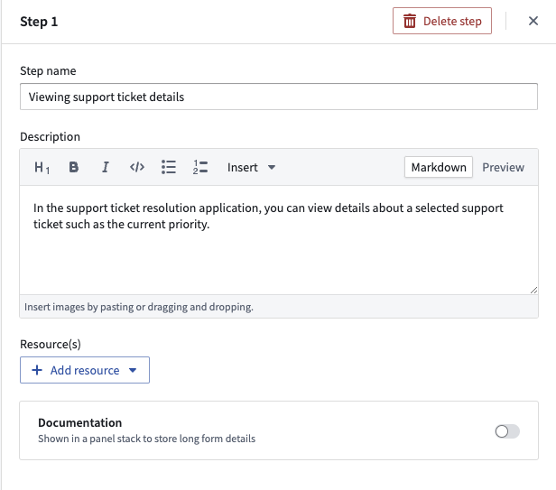
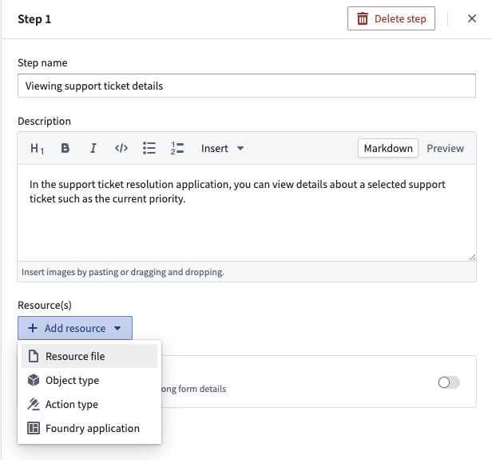
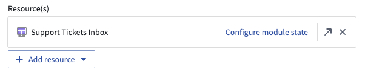
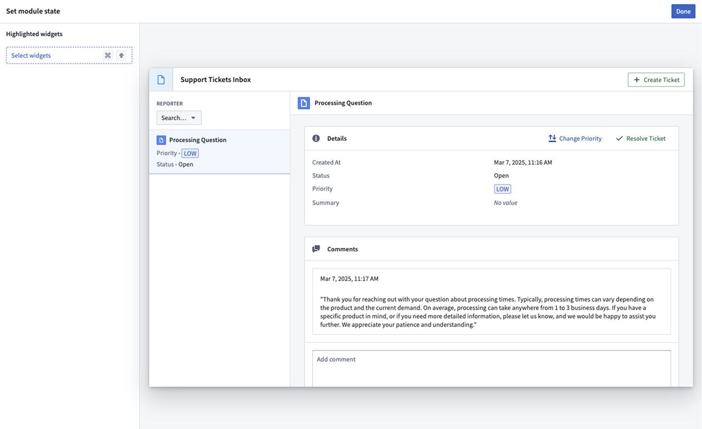
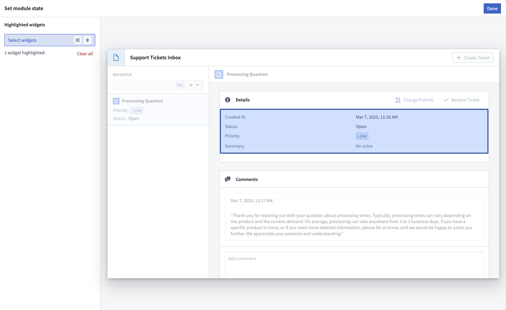
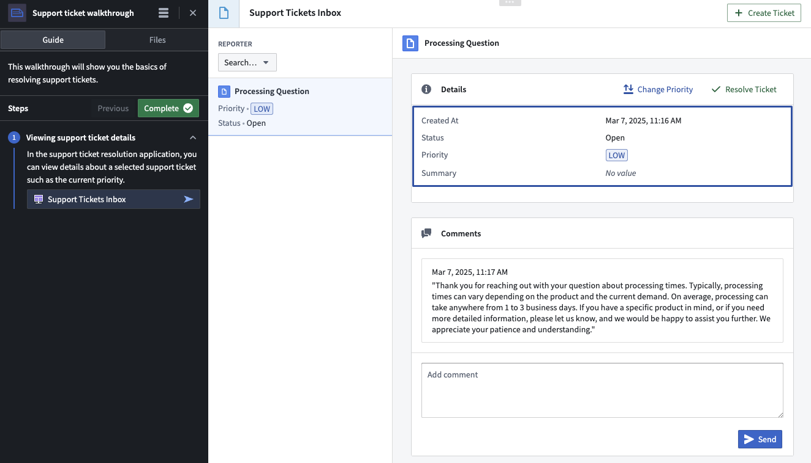

Workshop integration
You can integrate Walkthroughs with Workshop modules to enable more interactivity for end users.
Use Workshop modules in Walkthroughs
- In a Walkthrough module, navigate to the step that will include a Walkthrough.

- Add a resource to this step and select a Workshop module to add.

- Once the Workshop module is added, a Configure module state button will appear on the Workshop card. This button will take you to the Workshop configuration dialog.

Highlight Workshop widgets
Walkthrough builders can highlight specific parts of a Workshop module when an end user is in a walkthrough. By highlighting Workshop widgets, end users can easily identify and focus on key elements of the Workshop module.
- Open the Workshop configuration dialog of the step's linked Workshop module to be highlighted.
- Use the Select widgets button to enter widget selection mode.

- While in widget selection mode, select the widgets to highlight in the walkthrough. Widgets can be deselected by clicking on them again or by using the Clear all button.

- When a user is in the walkthrough, the selected widgets will now be highlighted on that step.

:::callout{theme="neutral"}
Only top-level widget highlighting is currently supported. This means that sections or subcomponents (such as individual buttons or tabs) cannot be directly highlighted.
:::